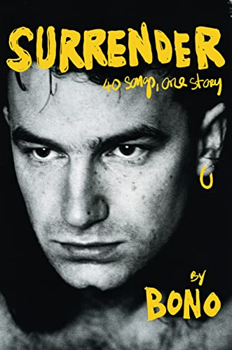

Bono discusses his new memoir, 'Surrender,' and the faith at U2's core
It was 1976. An Irish kid named Paul Hewson was trying to figure a lot of things out; his mom had died a couple years earlier, when he was just 14. Bono, as he was known, spent a lot of time at home, in Dublin, arguing with his dad and his older brother. But two goals kept him focused — to win over the heart of a girl named Alison Stewart and to become a rock star.
And in the same week, he asked Alison out — (she said yes) — and he ended up in Larry Mullen JR's kitchen for an audition. Two other guys were there — Adam Clayton and David Evans, also known as The Edge. The four of them would go on to become one of the biggest bands of their time: U2. And he is still married to Alison Stewart 40 years later.
Bono writes about these foundational relationships in his new memoir, called Surrender: 40 Songs, One Story, releasing Tuesday Nov. 1. In it, he also delves into another core relationship: his spirituality. Though never a Mass-on-Sundays kind of Catholic, from a young age he was fascinated with mysticism and ritual – and Jesus.
The following has been edited and condensed. To hear the broadcast version of this conversation use the audio player at the top of this page, or watch a longer cut in the video here. Additionally, an extended version of this interview will be available on Sunday, Oct. 30, via Up First, NPR's daily news podcast.
Rachel Martin, Morning Edition: You write in the book, "If I was in a café right now, and someone said 'Stand up if you're ready to give your life to Jesus,' I'd be the first to my feet." Did your band share your focus, your preoccupation, with faith?
Bono: They still do. At first, Adam [Clayton] was just like "Aw, man ..." You know, he had just one thing in life, he's a bass player — just wants to be in the bad-ass rock and roll band ... But he stood by me, you know, and stood by us in our devotion.
Could you imagine Ireland in the '70s, it's a civil war — all but a civil war. The country's dividing along sectarian lines. I was very suspicious, and still am a little suspicious of ... religious people, I mean, religion is often a club that people use to beat someone else over the head with. I learnt that at a very early age in Ireland.
You write that a lot of U2's music is grounded in the feeling, the emotion, even the structure, of a hymn.
Edge's family were Welsh — if you've never heard crowds singing at a Welsh-Irish rugby match, the stadium filled with song. They sing these huge hymns, and the Welsh sing as a crowd really, really well. [Singing] "Bread of heaven, bread of heaven ... we'll support you evermore..."
And it's in him, it's in Edge, those fifths. And that's the feeling we've been looking for in our music — yes we want punk rock, we want it to be brutal, we want it to be tough-minded, we wanted to have big tunes. But the ecstatic music is part of who we are.

Penguin Random House
With "Still Haven't Found What I'm Looking For," you say explicitly that in that song, there's some kind of root of that?Yeah. It's a gospel song — it's a psalm, if you wanted to ...
What's a "sam"?
Sorry, did I not pronounce that right? [Exaggerated] "Sam," is that how you say it, Rachel? You're so posh!
Your dad said, near the end of his life, that the most interesting thing about you was your spirituality, was your religion.
My faith, yeah. He was brilliant. He had faith and he lost it, you know, and people do — just when you need it. When he was dying, I write in the book, I'd gone in to see him and I was reading him bits of scripture and he was kinda giving me the hairy eyeball. [Laughs] A little bit of "Knock it off, will ye?" And I was so sad for him that he didn't have that, because he had always said to me things like, "You know, this stuff, this God stuff, I don't experience that — but you shouldn't give that up, 'cuz it's the most interesting thing about you," he says. Sort of a classic ...
I mean, was that sort of a slight to you? You're this musician ...
Now you're picking it up — his compliments would arrive either with a tickle or a boxing glove. [Laughs] I remember when we were recording U2's first album, he's like, "What're you doing?" And I said I've just been recording the album, and he's like, "You've been doing that for weeks." And I said yeah, it's three weeks — this is the last week. And he says "how long is an album?" About 40-odd minutes ... "Oh God, will you get it right? Get it right."
[Aside] After 40 years of selling out arenas as a musician, trying to eradicate hunger and AIDS as an activist, and also being a father and a husband, Bono is ready to admit he hasn't gotten it all right -- the Dublin kid who's always been the big voice at the center is ready to hear what others have to say.
"Just shut up and listen" is kind of where I'm at, at the moment. I just need to be more silent, and to surrender to my band as being at the core of what I'm trying to do with my life, surrender to my wife — and when I say "surrender," I do not mean making peace with the world. I'm not ready to make peace with the world. I'm trying to make peace with myself, I'm trying to make peace with my maker, but I am not trying to make peace with the world. The world is a deeply unfair place, and I'm ready to rumble. I'm keeping my fists up for that one.
Mailing
Sign up for out mailing list to get latest update and offers
We respect your privacy
© Copyright: Group 5 - FPT Aptech